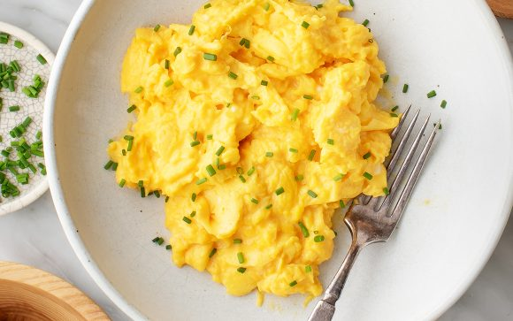

Scrambled Eggs Recipe

Classic Scrambled Eggs
With this 5-ingredient recipe, the scrambled eggs come out soft,
creamy, and flavorful every time. An easy, delicious breakfast.
Ingredients
- Eggs
- Milk
- Extra-virgin Olive Oil
- Salt
- Pepper
Steps
- Crack the eggs into a medium bowl and add the milk. Whisk until
smooth and combined
- Brush a small nonstick skillet with olive oil and bring to
medium heat
- Pour in the eggs. Pull a rubber spatula across the bottom
of the pan to form large, soft curds of scrambled eggs.
- Continue cooking over medium-low heat, folding and stirring the
eggs every few seconds
- Remove the pan from the heat when the eggs are mostly set.
Season to taste with salt and pepper and garnish with chopped
fresh chives, if desired